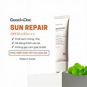

390.000 ₫ (Đã bao gồm VAT)
Giao Nhanh Miễn Phí 2H
Dung tích: 220ml x 2
Bạn muốn nhận hàng trước 16h hôm nay (Miễn phí). Đặt hàng trong 30 phút tới và chọn giao hàng 2H ở bước thanh toán.
Kem chống nắng Goodndoc Sun Repair SPF50+/PA+++ 50ml với công nghệ cải tiến hiện nay
Kem chống nắng GoodnDoc Sun Repair SPF 50+/PA+++ với công nghệ cải tiến, kết hợp chiết xuất rau má, tràm trà, Niacinamide (B3), Panthenol (B5),... Không chỉ bảo vệ da trước tia UV từ ánh sáng mặt trời, mà còn dưỡng ẩm, phục hồi, phù hợp cho mọi loại da.
Với kết cấu lỏng, mỏng nhẹ hết hợp nâng tone da nhẹ nhàng, phù hợp với làn da người châu Á, kem chống nắng GoodnDoc Sun Repair SPF 50+/PA+++ giúp làn da thêm rạng rỡ và tràn đầy sức sống.
| Thương hiệu | GoodnDoc |
| Xuất xứ thương hiệu | Hàn Quốc |
| Nơi sản xuất | Korea |
| Loại da | Da thường/Mọi loại da |
| Dung tích | 50ml |
Hotline: 0845628919
(Miễn phí 08-22h kể cả T7, CN)
Hướng dẫn đặt hàng
Phương thức thanh toán
Chính sách đổi trả
DANH MỤC SẢN PHẨM
Mỹ phẩm High-End
Chăm sóc cá nhân
Băng vệ sinh
Khử mùi
Nước hoa
Nước hoa nữ
Nước hoa nam